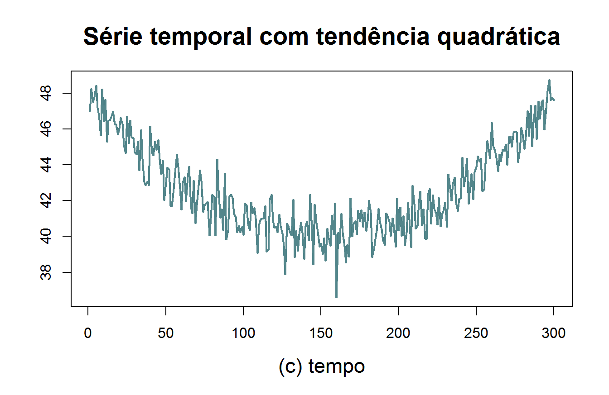
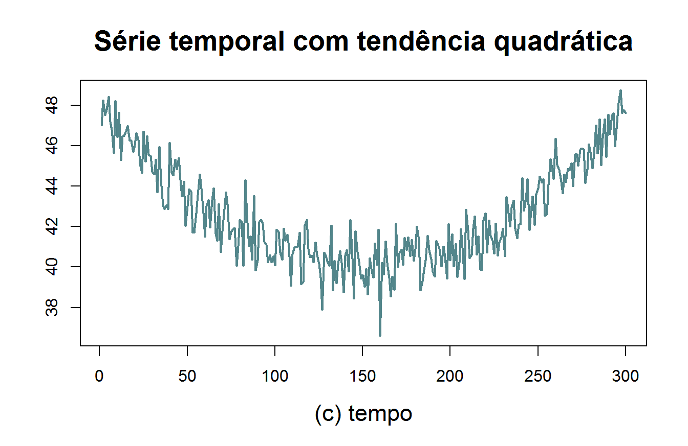

Capítulo 5 Séries temporais não estacionárias
No capítulo anterior estudamos processos estacionários, ou seja, processos satisfazendo
\[ \left\{ \begin{array}{l} \mathbb{E}(Z_t)=0; \\ \mbox{Var}(Z_t)=\sigma^2, \,\,\,\mbox{ para todo $t$}; \\ \gamma(k)=\mbox{Cov}(Z_t,Z_{t-k})\mbox{ não depende de $t$, somente de $k$}. \end{array}\right. \]
No entanto muitas séries temporais econômicas são claramente não estacionárias no sentido de que a média, variância e/ou estrutura de covariancia dependem do tempo. Uma série com estas características tende a se afastar permanentemente de qualquer valor à medida que o tempo passa. Fontes comuns de não estacionariedade em séries temporais são tendências, sazonalidades e quebras estruturais diversas. Destas, as mais simples de lidar são as tendências e sazonalidades. Uma série é dita apresentar uma tendência determinística se esta se desenvolve ao redor de uma função determinística, geralmente simples. A Figura 5.1 apresenta alguns diferentes tipos de tendências determinísticas: linear, logaritmica, quadrática e exponencial (veja também a Figura 4.2).
 

Figura 5.1: Séries não-estacionárias apresentando tendências determinísticas: (a) Tendência linear, (b) tendência logarítmica, (c) tendência quadrática e (d) tendência exponencial.
Da Figura 5.1 fica clara que uma série apresentando tendência determinística é não-estacionária: de imediato percebe-se que a média varia com o tempo em todos os casos apresentados. Antes que qualquer tipo de análise adicional possa ser feita, em especial, qualquer tipo de modelagem e previsão utilizando os modelos vistos até aqui, é obrigatória a remoção de tendências. Existem dois tipos fundamentais de tendências que serão estudadas adiante. Nos concentraremos inicialmente na remoção de tendências determinísticas.
5.1 Como lidar com tendências determinísticas
Existem várias maneiras de eliminarmos tendências determinísticas. Neste trabalho apresentaremos uma metodologia paramétrica de estimação da tendência determinística em uma série. Primeiramente é importante observar que, neste contexto, a forma funcional da tendência determinística deve ser identificada e especificada a priori. Uma maneira muito simples e útil para a remoção da tendência é a inclusão de uma função da variável tempo no modelo, geralmente carregando informações sobre o formato da tendência que se quer remover. Assumiremos que a forma funcional da tendência determinística depende de certos parâmetros de forma linear. Podemos dar alguns exemplos de modelos com tendência determinística: o modelo \[\begin{equation} Y_t=a + bt +\varepsilon_t \end{equation}\] em que \(\varepsilon_t\sim RB(0,\sigma_{\varepsilon}^2)\), torna-se um ruído branco com tendência determinística. O modelo AR(1) com tendência logarítmica pode ser escrito da seguinte forma \[\begin{equation} Y_t=a + b\ln(t)+\phi Y_{t-1} +\varepsilon_t. \tag{5.1} \end{equation}\] Nestes casos, acrescentamos uma tendência funcional ao processo, linear nos parâmetros, e procedemos a estimação desta tendência via MQO. Vejamos alguns exemplos.
Figura 5.2: Séries da receita nominal mensal de vendas do varejo nacional no ramo de combustíveis e lubrificantes. (a) Série, (b) série e reta ajustada e (c) residual.
Utilizando MQO podemos ainda remover qualquer tipo de função do tempo que seja linear nos parâmetros, como mostra o exemplo abaixo.
Figura 5.3: Séries do número de pessoas desocupadas em Porto Alegre. (a) Série, (b) série e tendência ajustada e (c) residual
5.2 Testes de raiz unitária
5.2.1 Identificando tendência estocástica
Uma série com uma tendência estocástica se diferencia de outra com uma tendência determinística, pois as mudanças na mesma deixam de ter um caráter transitório e passam a apresentar um caráter permanente (Gujarati 2003) e [(Pereira, 1988)].
A presença de uma tendência estocástica implica que flutuações em uma série temporal são o resultado de choques não somente no componente transitório ou cíclico, mas também no componente de tendência. [Balke (1991) e (Gujarati 2003) ]
Como vimos nas sessões anteriores, para um processo ARMA ser estacionário, o polinômio característico da parte AR não pode conter raízes de módulo igual a um, chamadas de raízes unitárias. Acontece que a presença de raízes unitárias no polinômio AR resulta na presença de tendência estocástica na série. A identificação de raízes unitárias é de grande importância na análise de séries temporais, e este fato se reflete na literatura relativamente longa tratando do assunto. Várias abordagens para a detecção de raízes unitárias estão a nosso dispor. Um dos testes mais utilizados na literatura é o teste de Dickey Fuller que veremos a seguir.
5.2.2 Teste de Dickey Fuller (DF)
Considere o modelo autorregessivo de ordem 1, AR(1)
\[\begin{equation} Y_{t}=a_0+\rho Y_{t-1}+\varepsilon_{t} \tag{5.2} \end{equation}\] em que \(Y_t\) é a variável de interesse, \(t\) é o índice temporal, \(\rho\) é coeficente e \(\varepsilon_t\) é o termo de erro. Uma raíz unitária está presente se \(\rho=1\) implicando que o modelo será não estacionário.
Nota-se que, quando \(\rho=1\)
\[Y_t =a_0 +Y_{t-1}+ \varepsilon_t\] % pode ser reescrito como
\[Y_t = Y_0 + \sum_{i=1}^t \varepsilon_i + a_0t \] com uma tendência determinística vindo de \(a_0t\) e um intercepto estocástico vindo de \(Y_0 + \sum_{i=1}^t \varepsilon_i\), resultando no que chamamos de tendência estocástica. O teste de Dickey Fuller consiste em fazer um teste t (mas com distribuição de Dickey-Fuller) para a significância do seguinte modelo
Teste de Dickey Fuller \[\begin{equation*} \Delta Y_{t}=(\rho-1)Y_{t-1}+\varepsilon_{t}=\delta Y_{t-1}+\varepsilon_{t}, \end{equation*}\] - \(H_0\): \(\delta=0\) (Não estacionário)
- \(H_1\): \(\delta<0\) (Estacionário)
Figura 5.4: Distribuição de Dickey Fuller
em que $$ é a operador de diferenciação, dado por \(\Delta Y_t=Y_t-Y_{t-1}\). Testar a presença de raíz unitária neste modelo (\(\rho=1\)) é equivalente a atestar se \(\delta=\rho-1=0\). Como o teste é feito sobre os resíduos, a distribuição de um teste \(t\) usual não será usual, nem mesmo assintoticamente. Para isso existe uma estatística de teste específica, \(\tau\), cujos valores críticos estão dispostos na tabela de Dickey Fuller.
Existem três versões principais do teste:
\[\Delta Y_t =\mu+\delta Y_{t-1}+\varepsilon_t\rightarrow \tau_{\mu};\]
O teste de Dickey Fuller é um teste unilateral a esquerda (veja figura 5.4)
A estatística \(\hat{\tau}\) para cada um dos modelos pode ser obtida da seguinte forma:
\[\begin{equation} \hat{\tau}=\frac{\hat{\delta}}{s(\hat{\delta})} \tag{5.3} \end{equation}\] em que \(s(\hat{\delta})\) é o desvio padrão de
\[\hat{\delta}=\frac{\sum_{t=2}^{n} Y_{t-1}Y_t}{\sum_{t=2}^{n}Y_{t-1}^2}-1,\] que é a estimativa de mínimos quadráticos de \(\rho\) menos 1, para garantir que, sob \(H_0\), tenhamos \(\delta=0\). O desvio padrão pode ser obtido a partir do cálculo da variância residual, que no caso mais simples se torna
\[S^2=\frac{1}{n}\sum_{t=1}^{n}(\Delta Y_t-\hat{\delta}Y_{t-1})^2.\]
Cada versão do teste (\(\tau\), \(\tau_\mu\) e \(\tau_\tau\)) tem sua própria estatística de teste e portanto tem seu próprio valor crítico o qual depende do tamanho amostral. Esses valores foram obtidos a partir e simulações de Monte Carlo.
Em cada caso, a hipótese nula de que é representada por \(\delta=0\). Para estes testes é conhecido que eles tem no sentido de que frequentemente não conseguem distinguir entre processos com raíz unitária (\(\delta=0\)) de processos com raíz quase-unitária (\(\delta\) próximo de zero), ou até mesmo com tendências não lineares.
A tabela a seguir apresenta alguns valores críticos para o teste de Dickey Fuller
| Estatística | n | 1% | 2.5% | 5% | 10% |
|---|---|---|---|---|---|
| 25 | -2.66 | -2.26 | -1.95 | -1.60 | |
| 50 | -2.62 | -2.25 | -1.95 | -1.61 | |
| \(\tau\) | 100 | -2.60 | -2.24 | -1.95 | -1.61 |
| 250 | -2.58 | -2.23 | -1.95 | -1.61 | |
| 500 | -2.58 | -2.23 | -1.95 | -1.61 | |
| >500 | -2.58 | -2.23 | -1.95 | -1.61 | |
| 25 | -3.75 | -3.33 | -3.00 | -2.62 | |
| 50 | -3.58 | -3.22 | -2.93 | -2.60 | |
| \(\tau_\mu\) | 100 | -3.51 | -3.17 | -2.89 | -2.58 |
| 250 | -3.46 | -3.14 | -2.88 | -2.57 | |
| 500 | -3.44 | -3.13 | -2.87 | -2.57 | |
| >500 | -3.43 | -3.12 | -2.86 | -2.57 | |
| 25 | -4.38 | -3.95 | -3.60 | -3.24 | |
| 50 | -4.15 | -3.80 | -3.50 | -3.18 | |
| \(\tau_\tau\) | 100 | -4.04 | -3.73 | -3.45 | -3.15 |
| 250 | -3.99 | -3.69 | -3.43 | -3.13 | |
| >500 | -3.98 | -3.68 | -3.42 | -3.13 |
5.2.3 Teste ADF
Existe uma extenção do teste de Dickey-Fuller (DF) chamado de Teste de Dickey-Fuller aumentado (ADF) o qual remove todos os efeitos estuturais (autocorrelações) da série temporal e então testa usando o mesmo procedimento.
Existem outro testes bem reconhecidos, que surgiram para resolver o problema de baixo poder do teste de Dickey Fuller. Estes testes devem ser também utilizados em caso de dúvida na hora da modelagem. São os testes de Phillips-Perron, KPSS, ERS, NG e Perron entre outros. Alguns estão disponíveis no Gretl, na opção .
5.3 Eliminando tendência estocástica
5.3.1 Diferenças sucessivas
O método de diferenciação sucessivas é utilizado para eliminar tendência estocástica. Para isso precisamos definir o operador diferença.
Operador Diferença \[\begin{equation*} \Delta =1-L \end{equation*}\] em que \(L\) é o operador de defasagem.
Na figura a seguir temos uma aplicação do operador diferença.

Figura 5.5: Passeio Aleatório (a) e sua diferença (b)
5.4 Modelagem ARIMA
Quando uma séries temporal apresenta tendência estocástica (não estacionária) diz-se que está é integrada \(I(\cdot)\). É necessário retirar a tendência para então analisar o ruído. Esse ruído não necessariamente é um ruído branco. Pode ser um modelo ARMA, por exemplo. Como visto anteriormente, a maneira de retirar a tendência estocástica de uma série temporal é diferenciando-á. Algumas vezes, é necessário diferenciar mais do que uma vez a série temporal até torná-la estacionária.
- Diz que uma série sem nenhuma raiz unitária é \(I(0)\).
- A série é dita \(I(1)\) se for necessário diferenciá-la uma vez para torná-la estacionária.
- A série é dita \(I(d)\) se for necessário diferenciá-la \(d\) vezes para torná-la estacionária.
layout(matrix(c(1,1,2,3), 2, 2, byrow = TRUE),width=1:1,height=1:1)
plot(BJsales-200, type="l",lwd=2,cex.lab=1.4, xlab=" ",ylab="Vendas", main=" ", cex.main=1.3,col="cadetblue4")
plot(diff(BJsales), type="l",lwd=2,cex.lab=1.4, xlab=" ",ylab="diff(Vendas)", main=" ", cex.main=1.3,col="cadetblue4")
plot(diff(diff(BJsales)), type="l",lwd=2,cex.lab=1.4, xlab=" ",ylab="diff(diff(Vendas))", main=" ", cex.main=1.3,col="cadetblue4")Figura 5.6: Série de vendas, primeira e segunda diferenças
Exercício 5.1 (ANPEC 2012-07) Suponha que \(\Delta Y_t\) pode ser representado pelo seguinte processo:
\[\Delta Y_t=\varepsilon_t-0,6\varepsilon_{t-1},\,\,\,\mbox{para}\,\,\,t=1 \] \[\Delta Y_t=\Delta Y_{t-1}+\varepsilon_t-0,6\varepsilon_{t-1},\,\,\,\mbox{para}\,\,\,t\geq 2 \] em que \(\varepsilon_t\), \(t=1,2,\cdots\) é uma sequência de variáveis aleatórias independentes e identicamente distribuídas com média igual a 0. Se \(Y_t=0\), quando \(t=0\), calcule o valor da \(\mathbb{E}[Y_3]\).5.5 Previsão
Um dos objetivos finais na análise de séries temporais é a previsão. Assim, pode-se usar informações do passado para tomar decisões para o futuro. Existem outros métodos de previsão para séries temporais, como o de Média Móveis Simples (MMS), Suavizamento Exponencial (SE), entre outros, mas estes métodos não dependem de um ajuste de um modelo e não são considerados agora. Para uma boa previsão é fundamental que o modelo esteja bem ajustado e por isso deixamos este tópico para o final. Como é feita a previsão na prática?
A ideia da previsão é utilizar o conhecimento/observações que se tem até o tempo \(t\), (digamos que temos observações para uma certa variável durante os últimos 20 anos e, assim, \(t\) seria o último ano observado e \(\cdots,Y_{t-2},Y_{t-1},Y_t\) as observações). É conveniente definir \[ \mathbb{E}_t(Y_s)=E(Y_s|Y_t,Y_{t-1},\cdots,Y_2,Y_1), \] Assim, \[\mathbb{E}_t(Y_s)=Y_s, \mbox{ se $s\leq t$}\]
pass <- ts(AirPassengers, frequency = 12, start=c(1949,1), end=c(1959,12))
m1 <- arima(log(pass),c(0,1,1),seasonal = list(order=c(0,1,1),period=12))
prev <- predict(m1,n.ahead=4*12) # previsão de 1960 até 1964
l <- prev$pred - 1.96 * prev$se
u <- prev$pred + 1.96 * prev$se
ts.plot(AirPassengers,exp(prev$pred), exp(l), exp(u), log = "y", lty = c(1,4, 2, 2),col=c("cadetblue4",4,2,2),xlab=" ",xlim=c(1957,1964), ylim=c(200,1300))Figura 5.7: Previsão para o log da série de passageiros das companhias aéreas americanas
Para um exemplo de previsão, consideremos o modelo AR(1):
Exemplo 5.5 (Previsão para o modelo AR(1)) O modelo AR(1) é representado por: \[Y_{t+1}=c+\phi Y_t+\varepsilon_t.\] Assim,
\[\begin{eqnarray*} \mathbb{E}_t(Y_{t+1})&=&c+\phi Y_t=Y_{t+1}-\varepsilon_{t+1}\\ \mathbb{E}_t(Y_{t+2})&=&c+\phi \mathbb{E}_t(Y_{t+1})=c+\phi(c+\phi Y_t)\\ &\vdots&\\ \mathbb{E}_t(Y_{t+h})&=&c\sum_{i=1}^{h-1}\phi^{i-1}+\phi^h Y_t. \end{eqnarray*}\]Logo
Previsão h-passos à frente para o modelo AR(1) \[\hat{y}_t(h)=\mathbb{E}_t(Y_{t+h})\] representa previsão a frente, dado que observamos até o tempo \(t\).
5.5.1 Erro de previsão
O erro de previsão é definido como sendo o valor observado menos o valor previsto. Para um período \(h\), \(\varepsilon_t(h)\) é dado por:
Erro de previsão \[\varepsilon_t(h) = Y_{t+h}-\mathbb{E}_t(Y_{t+h}) \] os quais são não viesados, isto é, \(\mathbb{E}(\varepsilon_t(h))=0;\)
\[\begin{eqnarray*} \varepsilon_t(1)&=&Y_{t+1}-\mathbb{E}_t(Y_{t+1})=\varepsilon_{t+1}\\ \varepsilon_t(2)&=&Y_{t+2}-\mathbb{E}_t(Y_{t+2})=c+\rho Y_{t+1}+\varepsilon_{t+2}-c-\rho \mathbb{E}_t(Y_{t+1})\\ &=&\rho\varepsilon_{t+1}+\varepsilon_{t+2}\\ \varepsilon_t(3)&=&Y_{t+3}-\mathbb{E}_t(Y_{t+3})=c+\rho Y_{t+2}+\varepsilon_{t+3}-c-\rho \mathbb{E}_t(Y_{t+2})\\ &=&\rho^2\varepsilon_{t+1}+\rho\varepsilon_{t+2}+\varepsilon_{t+3}\\ &\vdots&\\ \varepsilon_t(h)&=&Y_{t+h}-\mathbb{E}_t(Y_{t+h}) = \rho^{h-1}\varepsilon_{t+1}+\rho^{h-2}\varepsilon_{t+2}\cdots+\rho\varepsilon_{t+h-1}+\varepsilon_{t+h}\\ \end{eqnarray*}\]
Tomando-se a esperança do erro de previsão, podemos observar que estes são não viesados, \(\mathbb{E}(\varepsilon_t(h))=0;\)
A variância do erro de previsão é dada por:
\[\begin{eqnarray*} \mbox{Var}(\varepsilon_t(h))&=&\mbox{Var}\left(\rho^{h-1}\varepsilon_{t+1}+\rho^{h-2}\varepsilon_{t+2}\cdots+\rho\varepsilon_{t+h-1}+\varepsilon_{t+h}\right)\\ &=&\sigma_{\varepsilon}^2\left(\phi^{2(h-1)}+\phi^{2(h-2)}+\cdots+\phi^{2}+1\right) \end{eqnarray*}\]
Note que a variância converge para uma constante, quando \(h\rightarrow\infty\), que é \(\frac{\sigma_{\varepsilon}^2}{1-\rho^2}\) que é a variância não condicional da série \(Y_t\).
Se a distribuição dos resíduos \(\varepsilon_t\) é a Normal, então o intervalo de confiança para os resíduos é dado portanto
\[c\sum_{i=1}^{h-1}\rho^{i-1}+\rho^h y \pm 2\sigma_{\varepsilon}\left(\phi^{2(h-1)}+\phi^{2(h-2)}+\cdots+\phi^{2}+1\right)^\frac{1}{2}\]
5.5.2 Medidas de desempenho
Diferentes modelos produzem previsões distintas, o que torna necessários avaliar essas previsões. Para isso são utilizadas algumas medidas de desempenho. As estatísticas mais conhecidas são:
MSE - Mean Square Error (erro quadrático médio) \[MSE_{t,H}=\sqrt{\frac{\sum_{h=1}^{H}\varepsilon^2_t(h)}{H}}\] Para calculá-los, deve-se deixar algumas observações fora da amostra. Por exemplo, em uma série com \(n\) observações , deixa-se as \(H\) últimas observações fora da amostra e estima-se o modelo agora com \(n-H\) observações restantes.
MAE - Mean Absolute Error (erro absoluto médio) \[MAE_{t,H}=\frac{\sum_{h=1}^{H}|\varepsilon_t(h)|}{H}\]
MAPE - Mean Absolute Percentual Error (erro absoluto percentual médio) \[MAPE_{t,H}=\sum_{h=1}^{H}\left|\frac{\varepsilon_t(h)}{Hy_{t+h}}\right|\]
5.5.3 Previsão dinâmica e estática
Quando faz-se previsões \(h\) passos a frente, \(\hat{y}_t(h)\), usando somente a informação até o tempo \(t\), tem-se a previsão dinâmica cuja variância acaba sendo maior. Quando, para prever algum passo a frente usa-se as observações até o tempo imediatamente anterior, tem-se a previsão estática. A previsão estática só é útil para efeito de comparação de modelos. Na prática, a previsão dinâmica é a única que interessa de fato.
5.6 Regressão espúria e cointegração
A utilização dos modelos de regressão envolvendo séries temporais não estacionárias pode conduzir ao problema que se convencionou chamar de regressão espúria, isto é quando temos um alto \(R^2\) sem uma relação significativa entre as variáveis (Harris et al. 1995). Assim, na presença de raiz unitária podem-se encontrar relações econométricas entre duas variáveis econômicas sem qualquer relação de causalidade entre uma e outra por puro acaso. Por exemplo, a regressão de uma variável I(1) com outra I(1) obtida independentemente gera alto \(R^2\) e estatística \(t\) significante. No entanto o resultado não tem significado econômico.
set.seed(76543210)
s1=cumsum(rnorm(100)) # Série I(1), s1
set.seed(01234567)
s2=cumsum(rnorm(100)) # Série I(1), s2 independente de s1
m1=lm(s1~s2)
summary(m1)##
## Call:
## lm(formula = s1 ~ s2)
##
## Residuals:
## Min 1Q Median 3Q Max
## -6.5336 -1.6894 0.1274 1.7391 6.6388
##
## Coefficients:
## Estimate Std. Error t value Pr(>|t|)
## (Intercept) 3.36738 0.47727 7.056 2.47e-10 ***
## s2 0.76312 0.08868 8.606 1.27e-13 ***
## ---
## Signif. codes: 0 '***' 0.001 '**' 0.01 '*' 0.05 '.' 0.1 ' ' 1
##
## Residual standard error: 2.955 on 98 degrees of freedom
## Multiple R-squared: 0.4304, Adjusted R-squared: 0.4246
## F-statistic: 74.06 on 1 and 98 DF, p-value: 1.273e-13Como podemos observar, encontramos um \(R^2=0.43\) alto e estatísticas significativas. No entanto, as séries são independentes. O resultado disso, é que quando colocamos no mesmo gráfico, a série \(Y\) e o predito, podemos observar que o predito não é nem de perto razoável.
Figura 5.8: Correlação expúria. Dois passeios aleatórios independentes
Isto ocorre devido ao fato de que a presença de uma tendência, decrescente ou crescente, em ambas as séries leva a um alto valor do \(R^2\) mas não necessariamente, a presença de uma relação verdadeira entre séries (Gujarati 2003)
Detectada a presença de raiz unitária, então deve-se trabalhar com as séries temporais diferenciadas e não em nível, ou seja, a tendência precisa ser removida. Assim, quando uma série econômica apresentar uma tendência estocástica tornar-se-á estacionária após a aplicação de uma ou mais diferenças, pois terá pelo menos uma raiz unitária. No entanto, ao se remover a tendência, elementos de longo prazo entre as variáveis são eliminados.
A interpretação econômica da cointegração é que se duas (ou mais) variáveis possuem uma relação de equilíbrio de longo prazo, então mesmo que as séries possam conter tendências estocásticas (isto é, serem não estacionárias), elas irão mover-se juntas no tempo e a diferença entre elas será estável (isto é, estacionária). Em suma, o conceito de cointegração indica a existência de um equilíbrio de longo prazo, para o qual o sistema econômico converge no tempo (Harris et al. 1995).
5.6.1 Quando é possível regredir duas séries I(d)
Para que a regressão entre duas séries temporais não seja espúria, elas devem satisfazer uma das seguintes situações:
Séries que cointegram, 1) \(\{Y_t\}\) e \(\{X_t\}\) devem ser estacionárias.
2) \(\{Y_t\}\) e \(\{X_t\}\) devem ser integradas de mesma ordem e o resíduo deve ser estacionário.
Se \(\{Y_t\}\) e \(\{X_t\}\) são integrados de ordens diferentes ou se \(\{Y_t\}\) e \(\{X_t\}\) são integrados de mesma ordem e o resíduo não é estacionário, então a regressão é espúria.
Um teste utilizado para detectar cointegração é o teste de Durbin-Watson.
5.7 Exercícios
Exercício 5.2 (ANPEC 2013-05) Um pesquisador corretamente postula o seguinte modelo de regressão:
\[
y_t = \beta_1 + \beta_2t + u_t,\,\,\,\,\,\,\, t = 1,\cdots, T;
\]
em que \(u_t\) é uma variável aleatória independente e identicamente distribuída ao longo do tempo, com média zero e variância finita.
Julgue as afirmativas:
4) Suponha que \(u_t = \rho u_{t-1} + \varepsilon_t\), \(\rho < 1\) e que \(\varepsilon_t\) seja uma variável aleatória
independente e identicamente distribuída ao longo do tempo, com média zero e variância finita. O estimador de mínimos quadrados ordinários de \(\beta_2\) no modelo é não viesado.
Exercício 5.3 (ANPEC 2007-07) Sejam \(Y_t\) e \(X_t\) duas séries temporais. Considere os resultados dos seguintes modelos de regressão estimados por mínimos quadrados ordinários (MQO):
\[\Delta Y_t = \underset{(1,70)}{4,8788} - \underset{(-1,97)}{0,1512} Y_{t-1} \mbox{e} \Delta X_t = \underset{(1,26)}{0,1094} -\underset{(-2,21)}{0,1807}X_{t-1} \]
Considere também os resultados da regressão de \(Y_t\) em \(X_t\)
\[Y_t = \underset{(1,70)}{23,3924} + \underset{-1,97}{14,4006} X_t + \widehat{e}_t,\] em que \(\widehat{e}_t\) é o resíduo. Finalmente, considere a seguinte regressão:
\[\Delta \widehat{e}_t = \underset{(0,06)}{0,0730} - \underset{(-3,43)}{0,4157} \widehat{e}_{t-1}.\]
Os números entre parênteses são os valores do teste t de significância individual dos parâmetros. Dado que o valor crítico a 5% da estatística de Dickey-Fuller é -2,938, é correto afirmar que:
Exercício 5.4 (ANPEC 2007-09) Julgue as proposições:
de segunda ordem, então \((1-L)²Y_t\) é um processo ARMA(2,2).
## Augmented Dickey-Fuller Test
## alternative: stationary
##
## Type 1: no drift no trend
## lag ADF p.value
## [1,] 0 3.52 0.990
## [2,] 1 2.45 0.990
## [3,] 2 1.94 0.986
## [4,] 3 1.71 0.978
## [5,] 4 1.42 0.960
## Type 2: with drift no trend
## lag ADF p.value
## [1,] 0 -0.172 0.935
## [2,] 1 -0.478 0.880
## [3,] 2 -0.664 0.814
## [4,] 3 -0.837 0.754
## [5,] 4 -1.010 0.693
## Type 3: with drift and trend
## lag ADF p.value
## [1,] 0 -0.986 0.937
## [2,] 1 -1.316 0.861
## [3,] 2 -1.606 0.739
## [4,] 3 -1.789 0.662
## [5,] 4 -2.077 0.541
## ----
## Note: in fact, p.value = 0.01 means p.value <= 0.01## Augmented Dickey-Fuller Test
## alternative: stationary
##
## Type 1: no drift no trend
## lag ADF p.value
## [1,] 0 -8.25 0.01
## [2,] 1 -5.34 0.01
## [3,] 2 -4.24 0.01
## [4,] 3 -3.38 0.01
## [5,] 4 -3.18 0.01
## Type 2: with drift no trend
## lag ADF p.value
## [1,] 0 -8.77 0.01
## [2,] 1 -5.76 0.01
## [3,] 2 -4.64 0.01
## [4,] 3 -3.72 0.01
## [5,] 4 -3.50 0.01
## Type 3: with drift and trend
## lag ADF p.value
## [1,] 0 -8.74 0.0100
## [2,] 1 -5.74 0.0100
## [3,] 2 -4.62 0.0100
## [4,] 3 -3.70 0.0262
## [5,] 4 -3.48 0.0461
## ----
## Note: in fact, p.value = 0.01 means p.value <= 0.01Figura 5.9: Séries Temporais S1,S2 e S3
Figura 5.10: FAC e FACP para três séries temporais distintas \(X_1\), \(X_2\) e \(X_3\).
f) Na figura 5.10 qual(is) dos gráficos de FAC e FACP pode(m) corresponder à FAC e FACP da Série BJsales? Justifique.
Figura 5.11: FAC e FACP dos resíduos do ajuste de três modelos a série BJsales,
| Teste 1 | Teste 2 | Teste 3 | ||||||||||||||||
|---|---|---|---|---|---|---|---|---|---|---|---|---|---|---|---|---|---|---|
| Def | ACF | PACF | Q-stat | [p-valor] | ACF | PACF | Q-stat | [p-valor] | ACF | PACF | Q-stat | [p-valor] | ||||||
| 1 | -0.483 | *** | -0.483 | *** | 47.49 | [0.00] | -0.406 | *** | -0.406 | *** | 31.42 | [0.00] | -0.031 | -0.031 | 0.19 | [0.65] | ||
| 2 | -0.079 | -0.408 | *** | 48.77 | [0.00] | 0.044 | -0.145 | ** | 31.79 | [0.00] | -0.121 | * | -0.122 | * | 3.22 | [0.19] | ||
| 3 | 0.089 | -0.254 | *** | 50.40 | [0.00] | 0.016 | -0.026 | 31.85 | [0.00] | 0.089 | 0.082 | 4.88 | [0.18] | |||||
| 4 | -0.029 | -0.216 | *** | 50.58 | [0.00] | 0.030 | 0.042 | 32.03 | [0.00] | 0.038 | 0.029 | 5.19 | [0.26] | |||||
| 5 | 0.044 | -0.098 | 50.98 | [0.00] | 0.008 | 0.052 | 32.04 | [0.00] | 0.066 | 0.091 | 6.12 | [0.29] | ||||||
| 6 | -0.095 | -0.189 | *** | 52.87 | [0.00] | -0.020 | 0.008 | 32.12 | [0.00] | 0.034 | 0.040 | 6.37 | [0.38] | |||||
| 7 | 0.072 | -0.121 | * | 53.99 | [0.00] | 0.027 | 0.023 | 32.27 | [0.00] | 0.053 | 0.070 | 6.96 | [0.43] | |||||
| 8 | -0.002 | -0.100 | 53.99 | [0.00] | 0.045 | 0.075 | 32.68 | [0.00] | -0.031 | -0.035 | 7.18 | [0.51] | ||||||
| 9 | -0.108 | -0.249 | *** | 56.49 | [0.00] | -0.096 | -0.056 | 34.52 | [0.00] | 0.043 | 0.045 | 7.58 | [0.57] | |||||
| 10 | 0.167 | ** | -0.090 | 62.44 | [0.00] | 0.122 | * | 0.073 | 37.54 | [0.00] | 0.048 | 0.023 | 8.09 | [0.61] |
##
## Call:
## arima(x = X, order = c(2, 1, 1))
##
## Coefficients:
## ar1 ar2 ma1
## 0.8305 0.0360 -0.607
## s.e. 0.1774 0.1178 0.160
##
## sigma^2 estimated as 1.774: log likelihood = -254.32, aic = 516.64Exercício 5.7 Seja \(\{y_t\}_{t=1}^{440}\) uma série temporal. Essa série foi ajustada de acordo com um modelo AR(2). A equação estimada foi: \(y_t=14.62-0.61y_{t-1}+0.15y_{t-2}\). Os seguintes dados estão disponíveis:
| \(t\) | 436 | 437 | 438 | 439 | 440 |
|---|---|---|---|---|---|
| \(y_t\) | 9.88 | 10.42 | 11.08 | 8.12 | 11.71 |
| \(\widehat{e}_t\) | -0.21 | 0.40 | 1.33 | -1.30 | 0.38 |
Exercício 5.8 Seja \(\{y_t\}_{t=1}^{450}\) uma série temporal. Essa série foi ajustada de acordo com um modelo MA(2). A equação estimada foi: \(y_t=10.01+e_t-0.64e_{t-1}+0.22e_{t-2}\). Os seguintes dados estão disponíveis:
| \(t\) | 446 | 447 | 448 | 449 | 450 |
|---|---|---|---|---|---|
| \(y_t\) | 9.79 | 10.22 | 7.43 | 12.41 | 8.35 |
| \(\widehat{e}_t\) | -0.52 | 0.21 | -2.34 | 0.87 | -0.60 |
Exercício 5.9 Escreva cada um dos seguintes processos usando o operador de defasagem L.
Exercício 5.10 Seja \(\{y_t\}_{t=1}^{450}\) uma série temporal. Essa série foi ajustada de acordo com um modelo ARMA(2,2). A equação estimada foi: \(y_t=1.61+1.39y_{t-1}-0.55y_{t-2}+e_t-0.81e_{t-1}+0.25e_{t-2}\). Os seguintes dados estão disponíveis:
| \(t\) | 446 | 447 | 448 | 449 | 450 |
|---|---|---|---|---|---|
| \(y_t\) | 12.16 | 11.69 | 11.56 | 10.32 | 10.87 |
| \(\widehat{e}_t\) | 0.56 | -0.07 | 0.19 | -0.75 | 0.62 |
\(\widehat{y}_{450}(2)\) e \(\widehat{y}_{450}(3)\). R: \(\widehat{y}_{450}(1)=10.3536\), \(\widehat{y}_{450}(2)=10.178\) e \(\widehat{y}_{450}(3)=10.06295\).
Exercício 5.11 Considere o modelo autorregressivo de primeira ordem, AR(1), definido por
\[Y_t=a+bY_{t-1}+u_t,\] em que \(a\) e \(b\) são parâmetros e \(u_t\) é uma sequência de variáveis aleatórias independentes e igualmente distribuídas, com média nula e variância \(\sigma^2\). Suponha que \(|b| < 1\). A previsão \(n\) passos-à-frente para a variável \(Y\) convergirá para
Exercício 5.12 As vendas mensais de um certo produto são representadas pelo modelo \[Z_t=3+a_t+0.5a_{t-1}-0.25a_{t-2}, \,\,\,\,\,\sigma_a^2=4.\]
Exercício 5.14 Usando a esperança condicional, calcule as previsões 1, 2 e 3 passos a frente (\(\widehat{y}_T(1)\), \(\widehat{y}_T(2)\), \(\widehat{y}_T (3)\)) para os seguintes processos:
d) ARIMA(2,1,2);
Exercício 5.15 Seja \(\{y_t\}_{t=1}^{440}\) uma série temporal. Essa série foi ajustada de acordo com um modelo ARIMA(1,1,1). O coeficiente estimado para o componente auto-regressivo foi 0,6347 e o coeficiente estimado referente à parte MA foi 0,3711. As seguintes informações estão disponíveis:
| \(t\) | 436 | 437 | 438 | 439 | 440 |
|---|---|---|---|---|---|
| \(y_t\) | 20.52 | 20.04 | 20.52 | 19.64 | 16.13 |
| \(\widehat{e}_t\) | -0.092 | -1.29 | 1.27 | -1.66 | -2.33 |
\(\widehat{y}_{440}(2)\). R: \(\widehat{y}_{440}(1)=13.05\) e \(\widehat{y}_{440}(2)=11.09\).
Exercício 5.16 Seja \(\{y_t\}_{t=1}^{440}\) uma série temporal. Essa série foi ajustada de acordo com um modelo ARIMA(1,2,1). O coeficiente estimado para o componente auto-regressivo foi 0,6364 e o coeficiente estimado referente a parte MA foi 0,3599. As seguintes informações estão disponíveis:
| \(t\) | 436 | 437 | 438 | 439 | 440 |
|---|---|---|---|---|---|
| \(y_t\) | 782.78 | 803.30 | 823.34 | 843.86 | 863.50 |
| \(\widehat{e}_t\) | 1.34 | -0.08 | -1.30 | 1.26 | -1.65 |
\(\widehat{y}_{440}(2)\). R: \(\widehat{y}_{440}(1)=881.99\) e \(\widehat{y}_{440}(2)=899.74\).
Exercício 5.17 Seja \(y_t\) o logaritmo de taxa de câmbio iene/US $. A seguinte regressão foi proposta: \(\Delta y_t=\beta_0+\beta_1 y_{t-1}+u_t\). As estimativas seguem abaixo:
| Estimativa | dp(\(\cdot\)) | |
|---|---|---|
| \(\widehat{\beta}_0\) | 0.162 | 0.435 |
| \(\widehat{\beta}_1\) | 0.099 | 0.025 |
Sabendo-se que \(n=777\), faça o teste DF e responda se a série inf apresenta raiz unitária.
Exercício 5.18 Utilizando os dados anuais (1959-1995) de \(\log(PIB)\) norte americano, a seguinte regressão foi proposta: | [log(PIB)_t=_0+_1 t+2 log(PIB){t-1}+3 log(PIB){t-1}+u_t.] As estimativas seguem abaixo:
| Estimativa | dp(\(\cdot\)) | |
|---|---|---|
| \(\widehat{\beta}_0\) | 1.650 | 0.670 |
| \(\widehat{\beta}_1\) | 0.0059 | 0.003 |
| \(\widehat{\beta}_2\) | -0.320 | 0.087 |
| \(\widehat{\beta}_3\) | 0.264 | 0.126 |
Exercício 5.19 Utilizando os dados anuais (1948-1996) de inflação norte americana, a seguinte regressão foi proposta: \[\Delta inf_t =\beta_0 + \beta_1inf_{t-1} + \beta_2 \Delta inf_{t-1} + u_t.\] As estimativas seguem abaixo:
| Estimativa | dp(\(\cdot\)) | |
|---|---|---|
| \(\widehat{\beta}_0\) | 1.360 | 0.517 |
| \(\widehat{\beta}_1\) | -0.310 | 0.103 |
| \(\widehat{\beta}_2\) | 0.138 | 0.126 |
Exercício 5.20 Responda V ou F, justificando sua resposta: Seja o processo auto-regressivo: \(y_t=\phi_1 y_{t-1} + \varepsilon_t\). Pode-se afirmar que:
_1-1$ e \(\Delta y_t = y_t - y_{t-1}\). V
Exercício 5.21 Responda V ou F, justificando sua resposta: Um econometrista estimou uma função consumo usando 25 observações anuais da renda pessoal disponível e consumo, a partir do modelo: \(C_t = \beta_0 +\beta_1 Y_t +u_t\) em que \(C_t\) representa consumo em \(t\); \(Y_t\) representa renda pessoal disponível em \(t\) e \(u_t\) é um erro aleatório. O econometrista fez o teste de Dickey-Fuller aumentado (ADF) para as séries de renda e de consumo, obtendo estimativas para a estatística do teste menores que os valores críticos tabelados, a 1%, 5% e 10%. Consequentemente, o econometrista:
Exercício 5.22 Responda V ou F, justificando sua resposta. Considere o modelo de regressão linear \(C_t = \beta_0 + \beta_1Y_t + u_t\). As variáveis são definidas como na questão anterior.
Exercício 5.23 Responda V ou F, justificando sua resposta. Considere a seguinte regressão entre \(y_t\) e \(z_t: y_t = \alpha z_t + u_t\), em que \(u_t\) é o erro. São corretas as afirmativas:
Exercício 5.24 Responda V ou F, justificando sua resposta. Com respeito à teoria das séries temporais, são corretas as afirmativas:
Exercício 5.25 Sejam \(Y_t\) e \(X_t\) duas séries temporais. Considere os resultados dos seguintes modelos de regressão estimados por mínimos quadrados ordinários (MQO): \[\begin{equation*} \Delta\hat{Y}_t=\underset{(1,70)}{4,8788}-\underset{(-1,97)}{0,1512}Y_{t-1}\,\,\,\,\,\,e\,\,\,\,\,\, \Delta\hat{X}_t=\underset{(1,26)}{0,1094}-\underset{(2,21)}{0,1807}X_{t-1}. \end{equation*}\]
Considere também os resultados da regressão de \(Y_t\) em \(X_t\). \[\begin{equation*} {Y}_t=\underset{(1,70)}{23,3924}+\underset{(-1,97)}{14,4006}X_{t}+\hat{e}_t, \end{equation*}\] em que \(\hat{e}_t\) é o resíduo. Finalmente, considere a seguinte regressão:
\[\begin{equation*} \Delta\hat{e}_t=\underset{(0,06)}{0,0730}-\underset{(-3,43)}{0,4157}\hat{e}_{t-1} \end{equation*}\]
Os números entre parênteses são os valores do teste t de significância individual dos parâmetros. Dado que o valor crítico a 5% da estatística de Dickey-Fuller é -2,938, é correto afirmar que:
Exercício 5.26 (ANPEC 2013-10) Julgue as seguintes afirmativas:
\[|\phi_2| < 1,\,\,\,\, \phi_2 - \phi_1 < 1\,\,\,\,\mbox{ e }\,\,\,\,\, \phi_2 + \phi_1 < 1.\]
References
Box, George EP, and Jenkins. 1970. Time Series Analysis: Forecasting and Control. San Francisco: Holden-Day.
Gujarati, Damodar N. 2003. “Basic Econometrics. Forth Edition.” Singapura: McGraw-Hill.
Harris, Frederick H deB, Thomas H Mclnish, Gary L Shoesmith, and Robert A Wood. 1995. “Cointegration, Error Correction, and Price Discovery on Informationally Linked Security Markets.” JOURNAL OF FINANCIAL AND QUANTITATIVE ANALYSIS 30: N0.